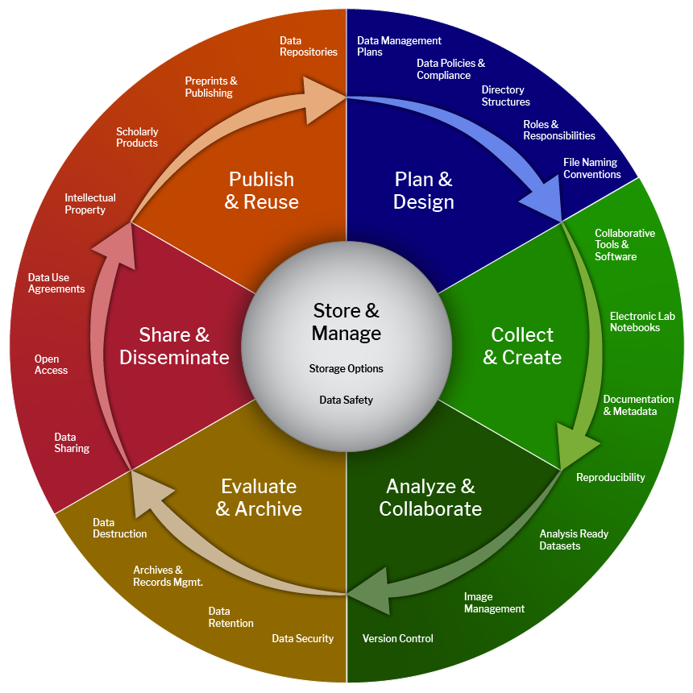

All in One View
Content from Introduction
Last updated on 2026-09-01 | Edit this page
Overview
Questions
- What is research data management (RDM) and why does it matter for modern research?
- What common problems arise from poor RDM practices?
- How can good RDM improve reproducibility and collaboration?
- When should you begin planning RDM for a project?
Objectives
- Define research data management and its role in reproducible research.
- Identify common pitfalls that arise from poor data management.
- List core RDM practices that improve organisation, sharing and long-term reuse.
- Recognise when to apply RDM practices during the project lifecycle.
Introduction
Research data management (RDM) is central to modern research. Increasingly complex data sets and collaborative projects have meant that the ability to organise, store, and share data responsibly is essential for ensuring research integrity, reproducibility, and compliance with institutional and funding requirements. Poor data management can lead to wasted time, duplicated effort, and a lack of reproducibility.
This workshop, Research Data Management and Analysis Practicalities, is designed to provide practical guidance on implementing good RDM practices early in your research workflow. We will explore strategies for organising files and folders, naming conventions, metadata standards, and principles of tidy data. Additionally, we will discuss computational considerations, including where to run analyses, how to store and transfer data securely, and options for large-scale computing.
By the end of this session, you will understand:
- Why RDM matters for transparency, reproducibility, and open science.
- How to structure and document your data for long-term usability.
- Best practices for file naming, metadata, and data cleaning.
- Available tools and resources for storage, computation, and sharing.
Whether you are starting a new project or revisiting existing analyses, adopting these practices will help you avoid common pitfalls and streamline your research process.
Have you ever…
- received data that were difficult to work with?
- tried unsuccessfully to replicate an analysis?
- been frustrated by a lack of transparency from collaborators?
- been confused revisiting one of your own analyses?
If you answered “yes” to any of these, the techniques in this workshop will help address the underlying causes and give you practical ways to prevent similar problems in future projects.
- Start RDM planning at project inception; retrofitting is costly and error-prone.
- Clear, consistent file naming and folder structures save time and prevent mistakes.
- Metadata is essential: it makes data findable, understandable and reusable.
- Reproducibility requires both well-organised data and documented analysis steps.
- Use institutional and community resources for storage, sharing and preservation.
Content from FAIR Principles
Last updated on 2026-09-01 | Edit this page
Overview
Questions
- What is FAIR and how do the principles apply to research data?
- How do Findable, Accessible, Interoperable and Reusable map to practical actions?
- What are common barriers to making data FAIR?
Objectives
- Explain the meaning of each FAIR principle and give practical examples.
- Identify changes you can make to data and metadata to increase FAIRness.
- Recognise repository and policy requirements that support FAIR data.
FAIR (Findable, Accessible, Interoperable, and Reusable)
FAIR (Findable, Accessible, Interoperable, and Reusable) are guiding principles for scientific data management and stewardship. The acronym highlights characteristics that make data more useful to humans and machines.
- Findable: Assign persistent identifiers (for example DOIs), provide rich metadata, and ensure metadata is indexed by searchable resources. Use clear and consistent naming and include keywords and controlled terms where possible.
- Accessible: Make data retrievable using standard protocols (e.g. HTTP(S), API access) and document access conditions. Accessibility does not necessarily mean open — it can include well-documented access restrictions.
- Interoperable: Use shared formats, standards and vocabularies so datasets can be combined and analysed together. This includes adopting community ontologies and common file formats (for example CSV, JSON, NetCDF).
- Reusable: Provide clear licences, provenance, and richly described metadata so others can reproduce and build on the work. Include methods, code, and versioned data where possible.
Practical drivers for FAIR:
- Funding agencies increasingly require data management or data sharing plans that align with FAIR principles.
- Many journals require data underlying publications to be available and well-documented.
- FAIR practices increase the longevity and impact of research outputs.
Examples:
- Add an explicit licence (e.g. CC BY) and a DOI when depositing data in a recognised repository.
- Use ISO dates and unit annotations in metadata for clarity.
- Adopt community vocabularies or ontologies for key fields (e.g. species, disease terms).
- FAIR is about enabling discovery and reuse by humans and machines, not necessarily about being open.
- Persistent identifiers, standard protocols, and rich metadata are central to FAIR.
- Interoperability is achieved by adopting community standards and controlled vocabularies.
- Reuse requires clear licence and provenance information.
- Start embedding FAIR principles in your workflow from the project outset.
Content from The Data Lifecycle
Last updated on 2026-09-01 | Edit this page
Overview
Questions
- What are the main stages of the research data lifecycle?
- At which lifecycle stages should you plan metadata, storage and sharing?
- How does lifecycle thinking improve reproducibility and data stewardship?
Objectives
- Describe the typical stages of the research data lifecycle.
- Identify decisions to make at each stage (planning, collecting, processing, preserving, sharing).
- Create a simple checklist to guide RDM activities across the lifecycle.
Research Data Lifecycle
The research data lifecycle is a conceptual model that describes how research data are created, processed, used, stored and preserved. Thinking in terms of a lifecycle helps you plan for reproducible, secure and shareable data from the start.
Typical lifecycle stages: - Plan: Define data types, formats, storage, metadata, ethical and legal constraints, and assign responsibilities. Create a data management plan (DMP). - Collect / Acquire: Capture data with standardised procedures, record provenance, and collect metadata contemporaneously. - Process / Analyse: Clean and transform data, log processing steps, use version control for code and scripts, and store intermediate and final outputs with clear names. - Preserve: Choose a repository or archival storage for long-term preservation; include metadata, licences and persistent identifiers. - Share / Publish: Deposit data and code in appropriate repositories, document how others can access and reuse your resources. - Reuse / Repurpose: Facilitate reuse by offering clear documentation and machine-readable metadata.
Practical tips: - Integrate metadata capture into the data collection workflow to avoid loss of context. - Keep raw (unchanged) copies of primary data; perform analyses on copies with explicit versioning. - Ensure backup strategies are in place throughout the lifecycle; iterative backups reduce risk. - Use automation where possible (scripts, pipelines) to capture reproducible processing steps.

- Plan first: a clear plan reduces risk and streamlines later stages.
- Capture metadata early and often — context gets lost quickly.
- Preserve raw data and version analysed outputs and code.
- Use repositories and persistent identifiers to enable discoverability and reuse.
- Lifecycle thinking helps allocate responsibility and resources across a project.
Content from File Organisation
Last updated on 2026-09-01 | Edit this page
Overview
Questions
- What makes a folder structure and file naming scheme effective?
- How do you balance human-readability with machine-parsability?
- When should you rename original data files (and when should you avoid it)?
Objectives
- Define principles for organising project folders and naming files.
- Create a simple, reproducible file naming convention for a sample project.
- Identify strategies for linking filenames to metadata and preserving originals.
File Organisation
One of the most essential aspects of data management is organising your data. This includes naming, folder structure and documenting relationships between files. Before you start collecting or processing data, decide how you will structure and name files and folders so that team members can follow a standard approach.
Document your file directory structure and describe the kinds of records that should be maintained in those folders.
Organised Folder Structure
- Keep a consistent top-level layout for projects (for example: data_raw, data_processed, code, docs, results, notebooks).
- Separate raw data (never modified) from processed data and analysis outputs.
- Include README files in key folders to explain contents and conventions.
Reference: http://nikola.me/folder_structure.html
File Naming Convention
A file naming convention is a framework for naming your files so filenames convey what a file contains and how it relates to others. Good names let you scan directories and understand contents without opening files.
Guidelines:
- Identify 3–5 key metadata elements to encode in filenames (e.g. date, project, sampleID, experiment, replicate).
- Use consistent delimiters (underscores
_or hyphens-) and avoid spaces and punctuation. - Keep names as short as practical while remaining informative.
- Use ISO 8601 dates (YYYY-MM-DD) when including dates.
- Left-pad numbers (e.g. 01, 02) to ensure correct lexical sorting.
XKCD on file names (https://xkcd.com/1459/), Jennifer Bryan’s guidance on naming.
Three Principles of Naming Files
- Machine readable
- Avoid spaces, non-ASCII characters, and punctuation that can be interpreted by shells.
- Use delimiters to make parsing simple via regular expressions or simple split operations.
- Human readable
- Ensure filenames contain meaningful content descriptors so humans can infer purpose quickly.
- Plays well with default ordering
- Put sortable elements (date or numeric sequence) near the start of the name.
Examples
Good:
- 2024-01-30_anemone-filtered_stats.csv
- 01_experimentA_sampleA_rep01.fastq.gz
Bad:
- My-arbitrary filename has punctuation&spaces.xls
Sequencing and Version Control
- Preserve original instrument or sequencing files untouched in a raw folder.
- If re-sequencing or reprocessing, add explicit versioning (e.g. _v01, _v02) or sequencing suffixes (_001, _002).
- Avoid renaming original files unless absolutely necessary; if you must, keep an audit table that maps original names to new names.
Metadata Linkage
- Ensure filenames link clearly to metadata records: include a unique sample identifier used both in the filename and in a metadata table.
- Maintain a separate column in metadata spreadsheets with the precise filename for each sample.
- Lock or protect final metadata spreadsheets to prevent accidental overwrites; keep a controlled edit history.
- Choose a concise, consistent naming scheme and document it in a project README.
- Use ISO dates and zero-padded numbers for reliable sorting.
- Keep raw and processed data in separate folders and never overwrite raw files.
- Link filenames to metadata via a shared unique identifier.
- Document any renaming actions and use versioning for processed outputs.
Content from Tidy data
Last updated on 2026-09-01 | Edit this page
Overview
Questions
- What are the principal rules of tidy data and why do they matter?
- How do messy data patterns (wide tables, headers as values) impede analysis?
- What are common Excel behaviours that cause reproducibility problems?
Objectives
- State Hadley Wickham’s four tidy data rules and apply them to example datasets.
- Identify common messy layouts and describe how to tidy them.
- Recognise Excel pitfalls and outline safeguards to prevent data corruption.
“Happy families are all alike; every unhappy family is unhappy in its
own way.” — Leo Tolstoy
“Tidy datasets are all alike, but every messy dataset is messy in its
own way.” — Hadley Wickham
Tidy data
A substantial portion of data analysis time is spent cleaning and preparing data. Applying consistent organisation conventions reduces repeated work and makes downstream analysis, modelling and visualisation straightforward.
Tidy Data in a nutshell
Tidy data provide a standard way to organise values within a dataset so tools can work predictably.
Reference: https://vita.had.co.nz/papers/tidy-data.pdf
Tidy data rules
- Every row is an observation (or case).
- Every column is a variable (or attribute).
- Every cell contains a single value.
- Each type of observational unit forms a table.
Examples
Tidy example:
| Name | Age | Height_m | Eye_Colour |
|---|---|---|---|
| John | 34 | 1.78 | Blue |
| Joe | 29 | 1.82 | Brown |
| Mary | 45 | 1.65 | Other |
Messy example:
- Columns named Blue, Brown, Other with 1/0 entries for eye colour (these headers are values, not variables).
- Height in a column without units; leading zeroes lost in sample IDs; merged cells used for titles.
Excel pitfalls
Excel can be “helpful” in ways that corrupt scientific data:
- Automatic type conversion (e.g. gene symbols to dates, or long numeric identifiers to scientific notation).
- Dropping leading zeros in sample IDs.
- Removing trailing zeroes in decimal data.
- Merging cells or using colour/highlighting instead of an explicit column value.
Practical safeguards:
- Store identifiers as text (e.g. prefix with single quote or specify column type when importing).
- Use underscores
_instead of spaces in sample names. - Add explicit columns for status or comments rather than highlight cells.
- Export and store tabular data as plain text (CSV or TSV) with well-documented column names.
Common “shenanigans” explained
- Gene identifiers like “2310009E13” may be interpreted by Excel as scientific notation (2.310009E+19) — leading to irreversible changes.
- Symbols such as “DEC1” or “OCT4” can be auto-interpreted as dates (December 1, October 4) in some locales.
Practical exercise suggestions
- Present a messy spreadsheet and convert it to tidy format using a scripting language (R or Python) or a reproducible sequence of steps.
- Inspect a sample metadata table for inconsistent date formats and normalise to ISO 8601.
- Tidy data principles enable predictable and reusable analysis workflows.
- Avoid manual spreadsheet operations that are hard to reproduce; script data cleaning where possible.
- Protect against Excel automatic conversions by setting column types and using plain-text exports.
- Keep units and variable descriptions explicit in column headings or a metadata file.
Content from Standardised language
Last updated on 2026-09-01 | Edit this page
Overview
Questions
- What are ontologies and controlled vocabularies, and how do they help data interoperability?
- When should you adopt existing standards rather than invent your own terms?
- How should you capture dates and missing values in metadata?
Objectives
- Define ontologies, taxonomies, and controlled vocabularies and explain their purpose.
- Identify common resources (examples) and when to apply them to domain data.
- Apply best practices for dates, missing values and sample aliasing in metadata.
Ontologies and standardised language
Ontologies and controlled vocabularies define and categorise classes of entities and the relationships between them. Using standardised language makes data interoperable, eases automation, and improves discoverability.
Examples:
- Taxonomies for organisms (taxonomy IDs).
- Enzyme Commission (EC) numbers for enzymatic activities.
- Gene Ontology (GO) terms for molecular function, biological process and cellular component.
Standardised language facilitates data mining, integration between datasets and reuse across tools.
Importance of standardised language
When fields use the same controlled terms and IDs, datasets can be joined reliably and processed by pipelines that expect those terms. Communities and repositories often recommend or require particular vocabularies; use community standards where available rather than inventing new labels.
Reference: GeneCards and similar resources provide centralised gene identifiers and annotations.
Metadata Dates
Dates must be unambiguous. For example, 04/03/2024 can be read as 4 March or 3 April depending on locale. Use:
- ISO 8601: YYYY-MM-DD (preferred for filenames and metadata).
- Or explicit formats like 04-Mar-2024 when readability matters.
Record in dataset headers which date format you are using.
Metadata pointers
- Include a field for sample aliases and track any synonyms or
previous IDs with a consistent separator (for example
;or,). - Avoid single-letter codes when descriptive labels are feasible.
- Use meaningful column headings and indicate units (for example
Height_morConcentration_mg_per_L).
More metadata pointers
- Be explicit about missing data — avoid blank cells. Use a consistent
token such as
NA,None, orNull, and document the chosen token in your metadata README. - Link filenames to metadata sample names by including a
filenamecolumn in your metadata table. - Once a spreadsheet is finalised, lock or freeze it to control writes and record who made changes.
- Avoid using non-standard markers (for example emoticons) to indicate values like “Yes” — use explicit textual or coded values.
Deposit data in a public repository?
Plan ahead: collect required metadata from the start to meet repository and journal requirements. Some repositories mandate specific fields and formats (for example accession numbers, licences, or structured dates).
Think about keywords and tags (organism, study type, instrument) to improve searchability.
- Use community ontologies and controlled vocabularies where possible to improve interoperability.
- Always document formats (especially dates) and tokens used for missing data.
- Keep a column mapping sample identifiers to filenames to avoid ambiguity.
- Collect repository-required metadata early to avoid rework at deposit time.
Content from Data analysis and computing
Last updated on 2026-09-01 | Edit this page
Overview
Questions
- Where should different types of computations be run (local laptop, HPC, cloud)?
- What factors determine whether to use HPC, cloud or local machines?
- How can you make analyses reproducible across computing environments?
Objectives
- Compare computing environments and identify suitable use-cases for each.
- Explain batch job management basics and the role of resource requests.
- Describe reproducibility practices (containers, environment specs, code versioning).
Data Analysis
Data analysis requires choices about where computations run, where data are stored, and how data are transferred. Clear decisions improve reproducibility and reduce interruptions in workflows.
Where to run your computations
Key considerations when choosing an environment:
- Data size: small datasets may be analysed locally; very large datasets often require HPC or cloud.
- CPU and memory requirements: large memory or many cores may need specialised nodes.
- Software dependencies: containerised environments or managed cloud images help maintain consistent software stacks.
- Cost and access: cloud resources incur costs; HPC access may be limited by allocations or institutional rules.
- Data locality: running analyses close to where data are stored reduces transfer overhead.
Large-scale computing in bioinformatics
Some analyses are resource intensive due to:
- Very large raw data (for example whole genome sequencing).
- Computational complexity (for example molecular dynamics).
- High-throughput workflows across many samples (for example population genomics).
- High RAM requirements (for example de novo assembly).
Supercomputing, HPC and campus resources
- Supercomputing centres (national) provide very large-scale resources and often operate merit-based access.
- HPC clusters (including campus clusters) are suitable for many research workflows and often provide special file systems and batch schedulers (for example SLURM).
- Local or university cloud resources offer flexible VM-based compute that can be sized to tasks.
Batch job management
Batch systems queue and schedule jobs. Typical workflow: - Create a job script that requests resources (cores, memory, walltime). - Submit to the scheduler (for example SLURM). - Monitor job status and retrieve outputs from job-specific working directories.
Always request resources conservatively and test with small jobs before scaling up.
Reproducibility and environments
- Containerisation (Docker, Singularity/Apptainer) packages software and dependencies for reproducible execution.
- Capture environment specifications (for example
renvfor R,requirements.txtorcondaenvironments for Python). - Version-control analysis code (Git) and tag releases corresponding to manuscript results.
Cloud computing
Clouds provide on-demand, scalable resources:
- Useful for bursty workloads, large-scale parallel jobs or when you need specialised hardware (for example GPUs).
- Consider cost management (spot instances, appropriate sizing) and data egress charges.
Galaxy
Galaxy is a web-based platform that enables many bioinformatics analyses without command-line experience.
- Useful for reproducible, shareable workflows and training.
- Choose compute based on data size, memory/CPU needs, software dependencies and cost.
- Use containers and environment specifications to ensure reproducibility.
- Test workflows on small data or with reduced resource requests before full runs.
- Use batch systems correctly: request resources, monitor jobs and preserve logs and outputs.
- Document where and how analyses were run in project metadata or README files.
Content from Data Storage
Last updated on 2026-09-01 | Edit this page
Overview
Questions
- Where should you store data during active analysis versus for long-term preservation?
- What are the pros and cons of institutional versus commercial storage services?
- How should sensitive data be stored and shared securely?
Objectives
- Compare storage options for short-term (compute-attached) and long-term (archive) needs.
- Describe backup, encryption and access-control strategies for research data.
- Identify institutional services and best-practice selection criteria.
Where to store your data
Choosing storage depends on access patterns, performance needs and retention requirements. Consider an integrated approach:
- Fast, compute-attached storage for active analyses.
- Durable, backed-up storage for long-term preservation.
- Secure storage with controlled access for sensitive data.
Compute-attached storage
- Usually local to HPC or cloud compute nodes; optimised for performance and short-term use.
- Examples: distributed parallel filesystems (Lustre, GPFS) on HPC and local instance storage on cloud VMs.
- Typically not backed up indefinitely and may be tied to project duration.
Data home (longer-term)
When not actively analysing data, store it in locations with:
- Regular backups and redundancy.
- Access controls and auditability.
- Reasonable cost and long lifespan.
- Clear documentation and discoverability.
Avoid relying solely on single external hard drives — hardware fails.
Institutional storage options (examples)
- University-managed services (for example OneDrive for students, research data services such as Mediaflux, DaRIS, institutional figshare, object storage).
- Institutional repositories often integrate with identity management and provide retention policies.
Note: Check access and retention terms (for example student OneDrive quotas and deletion policies upon leaving the institution).
Commercial and archival options
- Commercial cold storage (for example Glacier-style services) can be cost-effective for long-term archiving.
- Zenodo and other community repositories provide minting of DOIs for datasets and are suitable for publication-level deposits.
Backup strategies and encryption
- Follow the 3-2-1 rule: at least three copies of your data, on two different media, with one copy off-site.
- Use checksums to verify integrity after transfers and during backups.
- Encrypt sensitive data at rest and in transit; manage keys or access through institutional identity systems where possible.
Data retention and access
- Define retention periods that match funder, legal and institutional requirements.
- Document who can access which datasets and how access requests are handled.
- Keep a lifecycle plan for when data should be archived, deleted or migrated.
- Use compute-attached storage for active work, but plan for migration to institutional or archival storage for preservation.
- Implement regular backups and keep at least one off-site copy.
- Encrypt sensitive data and manage access control explicitly.
- Choose institutional repositories when possible for long-term stability and DOI assignment.
- Document storage locations, retention policies and responsible contacts in project metadata.
Content from Data Transfer
Last updated on 2026-09-01 | Edit this page
Overview
Questions
- What are common methods to transfer large datasets between systems?
- How do you ensure data integrity and security during transfer?
- When is a synchronisation tool preferred over simple copy commands?
Objectives
- Describe common file transfer protocols and tools and their use-cases.
- Demonstrate strategies to resume interrupted transfers and to verify integrity.
- Recommend secure transfer practices for sensitive data.
How to transfer your data
Data transfer between systems must account for size, bandwidth, reliability, endpoints and cost. Choose tools that match those constraints.
Data transfer considerations
- Size: very large datasets may be best transferred via specialised services or physical shipment of storage (when permitted).
- Bandwidth & reliability: unreliable networks require resumable transfers or synchronisation tools.
- Endpoints: ensure both ends support the same protocols and authentication methods.
- Cost: data egress charges can influence whether cloud-to-cloud or local transfers are appropriate.
File transfer protocols
- SCP (Secure Copy Protocol): simple, secure for many use cases and scriptable for small-to-moderate transfers.
- FTP/FTPS: legacy; FTPS adds TLS but FTP lacks modern security defaults.
- HTTP/HTTPS: useful for downloads or APIs; may not be ideal for bulk transfers.
- Rsync: excellent for synchronisation and resuming interrupted transfers; supports delta transfers to reduce bandwidth.
- Globus: designed for reliable, high-performance transfers between research endpoints (where available).
Data mirroring and synchronisation
- Use rsync with the
-Pflag to get progress and resume capability for interrupted transfers. - For two-way synchronisation across independent copies, consider Unison or dedicated synchronisation services.
- Maintain an audit trail for what was transferred, by whom and when.
Data integrity
- Use cryptographic hashes (for example MD5, SHA-256) to fingerprint files and verify integrity after transfer.
- Store checksums alongside files and validate them after transit and on archival storage.
- For very large archives, consider manifest files that list filenames, sizes and checksums.
Security
- Use secure protocols (SCP, SFTP, HTTPS) rather than unauthenticated FTP.
- Encrypt sensitive data prior to transfer if endpoints do not provide end-to-end encryption.
- Use institutional authentication (SSH keys, federated logins) and least-privilege access.
- Choose rsync or Globus for large or unreliable transfers; use SCP for simple secure copies.
- Always verify transfers with checksums (MD5 or SHA-256); keep manifests for auditability.
- Prefer encrypted and authenticated transfer methods for sensitive data.
- Automate recurring transfers with scripts and logging to reduce human error.
- Consider cost and data egress when transferring between cloud providers.
Content from University of Melbourne Resources
Last updated on 2026-09-01 | Edit this page
Overview
Questions
- What do you need to abide by when managing research data at UoM?
- What tools and systems are available to you?
- Where can you go for help with research data issues?
Objectives
- Understand how to meet your research data responsibilities at the University
- Identify appropriate tools and systems to manage your data
- Become familiar with available support and resources
Overview
Ensuring you meet your research data management obligations while doing research can feel overwhelming and stressful. The University has many resources, including systems, training and support teams to make this process as easy as possible.
UoM RDM Policy
Research data management responsibilities in Australia are set out in federal and state legislation and in the Australian Code for the Responsible Conduct of Research. These responsibilities have been translated into the University context by the Research Data Management Policy (MPF1242). All UoM researchers must abide by this policy.
The overarching principles in this policy are that:
- Research be recorded in ways that allow for the scrutiny of research results, supporting research integrity.
- Research data and records be managed safely and securely to meet ethical requirements, protect researchers, participants, and the University.
- Research data and records be retained for minimum periods under the University’s responsibilities as a public institution
- Wherever possible, research data be made available for access and reuse by the community, maximising the value of research investment.
It is important to note that international mandates (e.g., the European Union General Data Protection Regulation) or specific legal agreements such as contracts or data sharing agreements can also impact data management responsibilities but are not addressed in the policy.
Training and support
The following resources are provided by the University to help you manage your research data and meet your research data responsibilities more easily:
- Managing Data @Melbourne is a Canvas training course that covers practical steps to manage your data, including completing a Research Data Management Plan
- Research Data Services Directory is a searchable directory of all tools, services and training available at the University, including academic units such as the Melbourne Data Analytics Platform
- Research Data Systems Finder is a tool to filter and compare available research data systems to determine systems best suited to your research
- Research Data Management resources on the Research Gateway provide information about different aspects of RDM, including how to securely manage sensitive data to publishing and retaining data
- Research Computing Services manages the University’s large-scale research data storage, cloud computing and High-Performance Computing (HPC) and can help you setup accounts and allocate resources for your research
- Need more help? You can submit a ticket through ServiceNow to request specific advice on your research data management requirements
- All UoM research must abide by the RDM Policy
- The University provides many services to help you
- Don’t hesitate to reach out if you need more help